Creó la tecnología de las llamadas por Internet
¿Te imaginas el teletrabajo sin poder hacer una videoconferencia, o el confinamiento sin poder hacer una videollamada con tu familia y amigos? Marian Croak ha hecho esto posible.

Croak es pionera en el desarrollo del Protocolo de la Voz por Internet (VoIP por sus siglas en inglés). La tecnología VoIP convierte la voz en una señal digital que puede ser transmitida por Internet. En pocas palabras, gracias al desarrollo de Marian Croak, podemos hacer una llamada desde nuestro ordenador por Internet.
Croak tiene más de 200 patentes, siendo así una de las grandes inventoras de nuestra época. Croak tiene claro que el trabajo de la invención no es individual, sino que es un trabajo colaborativo. En palabras de Croak:
Los inventores son sólo humanos. Cualquiera puede tener ideas innovadoras. Pero tenemos que compartir esas ideas y colaborar entre nosotros para que se puedan realizar.
Su trayectoria comenzó en 1982 en AT&T Labs en donde llegó a ser Vicepresidenta Senior de Investigación y Desarrollo. En 2014, se incorporó a Google en donde ahora es Vicepresidenta de Ingeniería y es responsable de más de 2,000 ingenieros desarrolladores, diseñadores y expertos en innovación. Es graduada de la Universidad de Princeton y de la Universidad del Sur de California y cuenta con un doctorado en Análisis Cuantitativo y en Psicología Social.
Croak ha contribuido socialmente a través de la tecnología. Cuando el huracán Katrina devastó Nueva Orleans en 2005, Croak estaba trabajando en un sistema de votación por mensajes de texto, pensó que esta aplicación se podría adaptar para realizar donaciones a través de mensajes de texto, similar a como se hacía la votación. De esta manera, realizó la patente de libre acceso para que cualquier otra organización de beneficencia pudiera adoptarla. En 2010, tras el terremoto de Haití la tecnología se puso en uso y se recaudó más de 30 millones de dólares. También ha trabajado en el Proyecto Loon de Google, que extiende el acceso a Internet a las zonas de desastre, rurales y remotas en donde no hay Internet o su acceso es limitado.
Referencias sobre Marian Croak
- Entrevista a Croak del Foro Económico Mundial sobre qué se necesita para innovar
- Artículo sobre Croak del Face to Face, Africa en el Mes de la Historia de las Mujeres
- Conferencia de Croak y su experiencia en el Women Tech Makers
- Atrículo sobre Croak de la Univeridad del Sur de California sobre la voz en internet
- Croak en Wikipedia
Colabora
Puedes adquirir productos con nuestra nuestra ilustración dedicada a Marian Croak en nuestra tienda. Recuerda que todos los beneficios de estas ventas se donarán a una ONG dedicada a fomentar las vocaciones de ciencia, tecnología, ingeniería y matemáticas entre las niñas y jóvenes.